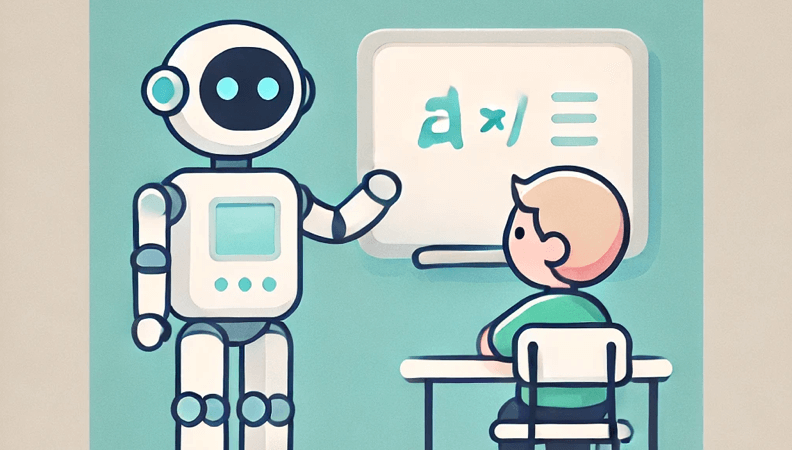
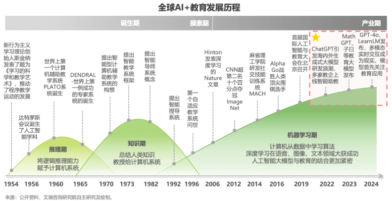

In China, few combinations stir up as much excitement—and confusion—as "AI + Education."
Since 2023, a new wave of AI-powered learning platforms, tutoring bots, and adaptive content generators has flooded into headlines and pitch decks. Everyone seems to agree this is the future. But what that actually looks like on the ground… is still messy.
In a country with 150+ million K-12 students, it's easy to dream big. Personalized learning at scale. AI tutors that never sleep. Automatic feedback, stress detection, homework generation. Investors love the vision. Parents? Not always.
"Let AI teach your child to read, calculate, and think."
Sounds amazing. But most families still want a human face, a proven path, and a guaranteed result. So let's slow things down.
Before asking what AI in education could become, we need to understand what it currently is in China—and why it's unfolding in ways that are both promising and deeply uneven.
The Numbers Don't Lie
Here's the irony: while excitement surged post-ChatGPT, actual funding in China's education sector dropped 85% between 2020 and 2023【36kr】.
Even in 2024, despite flashy new startups and government-led tech pushes, the phrase "AI education" often feels more like a PR necessity than a product category.
On the policy side, caution still lingers. The 2021 "Double Reduction" crackdown dismantled much of the for-profit tutoring industry. Since then, the rules have shifted—but not necessarily relaxed. This leaves AI companies navigating a narrow path: be innovative, but not disruptive; be helpful, but not too commercial.
So where does AI fit now? Mostly, it sits in liminal spaces:
• inside parenting apps promising "screen time with value"
• embedded in learning hardware (tablets, pens, AI toys)
• powering B2B teacher tools for grading or lesson design
• and increasingly, showing up in non-traditional education zones like vocational training, test prep, and adult learning
Definition Drift: What Counts as AI in Education Anyway?
One major challenge is semantic.
When some of the Chinese companies says they are doing "AI education," that can mean anything from:
• calling a decision tree a "reasoning agent"
• using AI tools to auto-write a bedtime story
• building foundational models trained on K-12 textbooks
There's no standard, and maybe that's fine—for now. But for users, this makes trust and adoption incredibly hard. Because here's the thing: education in China isn't just a product market.
It's an emotional market, driven by anxiety, aspiration, and social signaling.
If a parent can't explain why your AI tool helps more than a human teacher, they'll default to what they know.
Tech novelty ≠ educational credibility
Especially when your child's future is on the line.

Who's Building What? A Map of China's AI Education Players
Not all "AI education" is built the same. If you scroll through Chinese startup decks today, you'll find everyone from after-school tutoring apps to mindfulness games claiming to be "AI-driven." But behind the slogans, a few clear archetypes have emerged—each with its own logic, ambition, and constraint.
Here's a simplified map of how many Chinese AI education products currently take shape:
Type 1: "The Shell Is Hardware, the Core Is Still Content"
Examples: iFlytek (科大讯飞), Baidu Xiaodu, Youdao Dictionary Pen
These are the most visible players—selling AI-powered tablets, pens, and robots that promise to "upgrade" learning at home. But in truth, what parents pay for isn't just the hardware—it's the preloaded learning content and a sense of educational reassurance. AI plays a functional but limited role here:
• Voice recognition ("read this aloud")
• Smart correction (handwriting feedback)
• Pre-programmed lesson paths based on basic diagnostics
These devices are successful because they feel familiar. They offer tangibility, predictability, and offline value. But they often suffer from:
• Low long-term engagement (many kids lose interest quickly)
• Overpromised AI performance
• Heavy reliance on B2C marketing budgets
Type 2: "Smarter Content, Not Smarter Devices"
Examples: Huohua Siwei (火花思维), Modeng (魔灯), AI-powered storybooks, interactive reading apps
This group is all about software-first education, where AI adapts the content in real-time to fit the learner:
• Personalized learning paths
• Dynamic difficulty adjustments
• Auto-generated exercises and stories
Their strength: More engagement, better data feedback loops, and higher theoretical "learning efficiency." Their weakness: The cold start problem. These tools need user data to perform well—but most parents aren't eager to be early testers. And unless the benefits are obvious within the first 10 minutes, many won't come back.
Type 3: "Model First, Product Later"
Examples: DeepSeek, Zhipu AI, Baichuan, MiniMax
These companies are not education brands. They're building foundational large language models (LLMs)—the "brains" that could power future educational tools. But they are shaping the infrastructure of AI education in China, especially in higher education and B2B contexts:
• Zhipu AI's open-source ChatGLM has been used by edtech developers to build writing assistants, math tutors, and lesson planning bots.
• DeepSeek has partnered with top Chinese universities to co-create AI lab courses, helping students build real products using their models.
• Some private schools and test-prep platforms are already plugging these models into back-end systems to automate quiz creation or generate personalized study materials.
They're not teaching kids directly. But they're teaching the tools that will teach the kids. That matters, of course, the business model is still murky—most of these companies are pre-product, pre-revenue. But their influence on how "smart" educational tools can be is undeniable.
If the first wave of AI education was about content, the next wave will be about capability. And that capability may very well come from players like Zhipu and DeepSeek.
While besides famous players tech dominating headlines, a vibrant ecosystem of startups is quietly reshaping AI education in China. These emerging companies are carving out unique niches, leveraging platforms like WeChat, exploring international markets, and addressing specific educational needs.
WeChat Mini Programs: The Rise of Micro-Learning Tools
One pattern worth watching: some startups are skipping the App Store altogether. Instead, they launch inside WeChat. Like a chatbot shared by a parenting influencer, a mini-program that delivers one learning tip per day, or a small beta tool spread in teacher communities or homeschool circles.
In a market where education is deeply tied to trust and intimacy, low-key, social-first launch strategies just work better. Additionally, we can see benefits here, Users can access educational tools without installing separate apps. Easy sharing within WeChat enhances organic growth. Lower development and marketing costs compared to standalone applications. However, Converting free users to paying customers within the WeChat ecosystem can be challenging. Standing out among numerous mini programs requires strategic marketing.
Going Global: Chinese Startups Targeting Overseas Markets
Facing intense domestic competition, some Chinese AI education startups are setting their sights on international markets. Companies like MiniMax have launched products such as the avatar chatbot app "Talkie," which has gained popularity among U.S. teenagers. This strategy not only diversifies revenue streams but also mitigates risks associated with domestic market saturation.
However, tailor content to fit the cultural and educational contexts of target markets is challenging. Navigating different countries' data privacy and education regulations also need efforts. Marketing strategy and branding should be smart to ensure the product is competitive enough.
Vertical focus: startups built for one use-case, not ten
Then there are the deep vertical players—teams that don't try to "disrupt education," but to deeply optimize one layer of it. A great example is Yuanbiancheng, a Hangzhou-based startup focusing exclusively on AI-powered programming education. They custom AI tutors trained specifically on coding pedagogy, dynamic problem sets that adapt to each student's learning style, and bite-sized modules aimed at younger students entering STEM for the first time.
They're trying to rebuild motivation for a hard subject through intelligent pacing and feedback.
"AI + Education" isn't one product. It's a thousand small workflows being reimagined. They win not by replacing teachers, but by respecting learning as a slow, emotional, deeply human process—and then helping it, gently.
The Cold Start Problem: Why Is Adoption So Slow?
Despite the buzz around AI in education, widespread adoption remains sluggish. Along with some specific challenges above, several general factors contribute to this phenomenon:
a. Supply-Demand Mismatch: What Products Can Do ≠ What Parents Want to Buy
Many AI educational products boast advanced features, but they often fail to align with parents' actual needs and expectations. There's a gap between technological capabilities and user desires, leading to low adoption rates.
b. Inherent "Long Conversion Path" of Learning Products + Weak Viral Mechanism
Educational products typically require a longer period to demonstrate effectiveness, making quick user acquisition challenging. Additionally, the lack of strong viral mechanisms hinders rapid growth.
c. Case Study: "The More You Invest, the Faster You Burn, the Quicker You Die"
According to a report by 36Kr, many startups in the AI education sector have experienced rapid cash burn without achieving sustainable growth, highlighting the dangers of aggressive expansion without proper product-market fit.
In response to these challenges, a new approach is emerging among smaller companies:
Small Companies' Cold Start Strategies (Community + Parent Bloggers + Free Trial Classes), leveraging community engagement, collaborations with parent bloggers, and offering free trial classes to build trust and gradually acquire users. While GPT-like models offer impressive capabilities, their practical implementation in educational contexts faces challenges. Growth-oriented models that focus on iterative improvement based on user feedback are gaining traction. Establishing a robust feedback loop through user data is crucial for refining AI educational products. This iterative process helps in tailoring the products to better meet user needs.
Looking Ahead: Can AI Rewire China's Education Infrastructure?
If we zoom out from China for a second, the picture gets even clearer. AI and education have been dancing together for over 70 years—but the music just changed.
The chart below shows the global timeline of AI + education development, from logic-based reasoning systems in the 1950s to the era of ChatGPT and MathGPT we're in now.

It breaks down into four distinct phases:
推理期 (Inference Period): AI was about logic, deduction, and symbolic systems. Useful for theory, but far from application.
知识期 (Knowledge Period): The rise of expert systems, AI began organizing knowledge like a human tutor might.
探索期 (Exploration Period): Adaptive learning, intelligent tutoring, and deep learning began to take shape, laying the groundwork for smart education platforms.
产业期 (Industrial Period): From 2016 onward, with breakthroughs like AlphaGo and ChatGPT, AI truly began integrating into mainstream education—from content generation to interactive teaching agents.
If global AI + education is entering the "产业期" (industrial maturity phase), then China is still midway through the "探索期" in most domains—and that's not a bad thing. There's still room to define what "AI in education" actually means for Chinese learners, families, and schools. And the most impactful applications are yet to be invented, especially those grounded in real classroom use, not demo-stage hype. Chinese companies still have a chance to build globally exportable education tools, like in programming, STEM, language learning, and vocational upskilling.
It is promising. What's happening in China's AI+education space right now isn't just a race for better algorithms. It's a deeper reshaping of what we learn, how we learn, and what we value in learning.
Tech can support academic progress, personal development, and emotional well-being, all at once. Education is no longer just about academic outcomes. Recent trends show an expanded vision for how AI might support children's growth in China. AI systems can now generate adaptive tests, map out knowledge graphs, and give nuanced error feedback.
It can be seen that tools are being developed to enhance creativity, communication, and project-based thinking. Emerging AI copilots are being trained not just to instruct, but to "accompany"—offering micro-encouragement, tone-aware conversation, and learning motivation nudges.
While most attention is still on school-based tools, many of the most promising experiments are happening outside: In vocational education, AI is helping map skill gaps to industry standards, giving students clearer learning-to-employment pathways. In corporate training, data-driven onboarding and internal knowledge delivery are being reimagined. And in the global market, Chinese edtech firms are beginning to export structured content (like Mandarin learning and STEM frameworks) in AI-enabled formats.
But the Future Needs Guardrails. Of course, with expansion comes tension. Three big questions are emerging:
Can we protect data without losing personalization?
Massive educational data sets fuel precision, but also raise privacy concerns, especially for minors.
Will AI empower teachers, or deskill them?
If recommendation engines get too good, do teachers stop designing? Do students stop reflecting?
What happens when "efficiency" overshadows "meaning"?
Education isn't just a system. It's a value choice. The goal is still human growth—not just metrics. If we were to track where this story goes next, here's what to keep an eye on.
Looking ahead, several signals suggest where the next chapter of AI in Chinese education might unfold. Small Language Models (SLMs), tailored specifically for local learning environments, are emerging as a cost-effective and nimble alternative to heavyweight general-purpose models. Meanwhile, many start-ups are choosing a quieter, more grounded path to growth—relying on parent influencers, WeChat mini-programs, and free trial classes rather than high-burn VC blitzes. On the product side, we're seeing the rise of emotional AI copilots: dialogue agents designed not just to give answers, but to stay, encourage, and engage over time. And behind it all, China's evolving policy and ethics frameworks will shape how questions of equity, privacy, and human-centered design play out in the classroom.
Everyone wants to build the future of learning. But maybe it won't be fast, viral, or even profitable at first. It's about building with enough empathy and patience that every student, every parent, and every teacher feels like the future was made for them, too.
So here's the question:
Can we wait long enough for it to actually work?
References
36Kr (2024). 《AI教育赛道，投得越多，死得越快？》
iResearch (2024). 2024年人工智能+教育行业发展研究报告
Reuters (2025). 'Zhipu AI and DeepSeek's B2B Applications in Higher Education'.
Ministry of Education, China (2023). '推进AI基础教育课程体系建设目标'
MiniMax Official Website, Product Page for Talkie (2024)
Yuanbiancheng - Company profile & founder interview (2024)